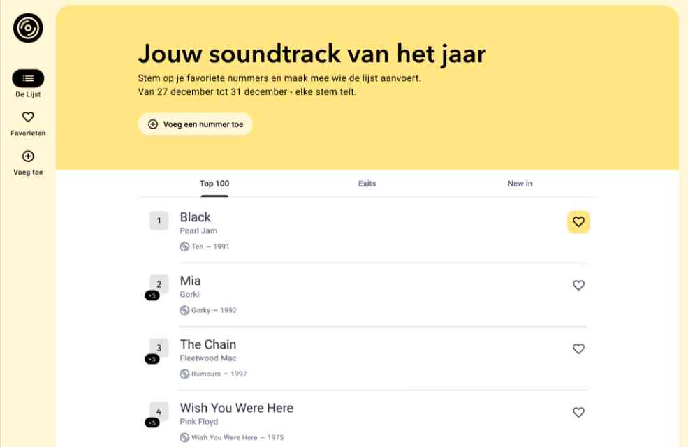

De Tijdloze
Voor deze opdracht ontwikkelde ik een responsive applicatie gebaseerd op De Tijdloze 100 van Studio Brussel. De applicatie biedt gebruikers een manier om de lijst van beste nummers aller tijden te bekijken en aan te maken.

Bij het eerste bezoek krijgt de gebruiker een laadscherm te zien met een animatie op het logo. Ondertussen werd in de achtergrond mijn data ingeladen.
De homepagina bevat drie tabbladen: een tabblad voor de Top 100, een tabblad voor nieuwe nummers en een tabblad voor nummers die de lijst verlaten. Door op een nummer te klikken gaat de gebruiker naar de detailpagina van de artiest van dat nummer.
Gebruikers kunnen nummers opslaan en toevoegen aan hun favorieten. Deze worden bewaard in localStorage. Favorieten kunnen ook verwijderd worden.
Via een formulier kunnen gebruikers zelf nummers toevoegen. Deze worden opgeslagen in localStorage en kunnen ook aangepast worden. De aangemaakte nummers werden wel niet echt toegevoegd aan de API.